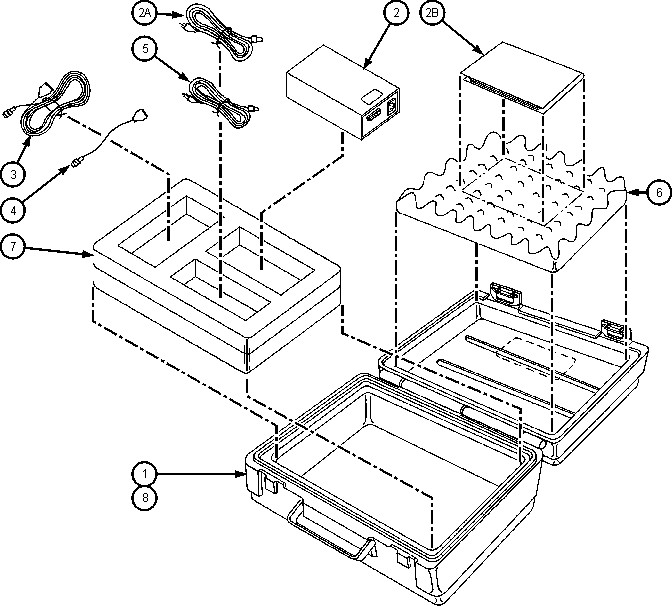

Operating Documentation
Direction 5670000, Rev# 1
Optima MR450w 1.5T Service Methods
Module Version 1.0, Version Date 2/11/08
Operating Documentation |
Illustration 1: Lakeshore 208 Digital Thermometer Kit 46-301477G2 Components

Table 1: Lakeshore 208 Digital Thermometer Kit 46-301477G2 Rev. 1
| Item | Part Number | Quantity | Description | Spare |
|---|---|---|---|---|
| 1 | 46-301453P6 | 1 | Blow-Molded Case | N |
| 2* | 46-301478P1 | 1 | Digital Thermometer, 3W, 4-digit display | Y |
| 2A* | ― | ― | Power Cord for Digital Thermometer | ― |
| 2B* | ― | ― | Operator's Manual for Digital Thermometer | ― |
| 3 | 46-301619P1 | 1 | Interconnecting Cable to Balzer Diodes | Y |
| 4 | 46-301620P1 | 1 | Interface Cable to GE Magnet | Y |
| 5 | 2129919 | 1 | Interface Cable to GE Magnet w / DIN Connector | Y |
| 6 | 46-301618P1 | 1 | Convoluted Top Foam | Y |
| 7 | 46-301618P2 | 1 | Two-Layered Bottom Foam | Y |
| 8 | 2139962 | 1 | Kit Label | N |
| * Items 2A and 2B are included in item 2. | ||||